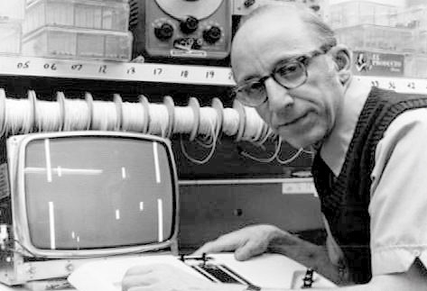

Ральф Баер
Американский инженер и изобретатель немецкого происхождения, пионер в области видеоигр.
Баер даже получил прозвище 'Отец видеоигр' благодаря огромному вкладу в индустрию игр и видеоигр. В 2006 Баер был награжден Национальной медалью в области технологий (National Medal of Technology) за изобретение игровой приставки.
Ральф Баер родился 8 марта 1922 года в Родальбене, Германия (Rodalben, Germany). Когда ему было 11 лет, его исключили из школы по причине еврейского происхождения – тогда все еврейские дети должны были посещать школы для евреев. Отец Ральфа работал в то время на обувной фабрике в Пирмазенсе (Pirmasens). За два месяца до Хрустальной ночи ему удалось вместе с семьей покинуть Германию и уехать в Соединенные Штаты (Unites States). В Штатах Баер работал на фабрике за 12 долларов в неделю. По большому счету он был самоучкой. В 1940 он окончил Национальный институт радио (National Radio Institute) со специальностью радиотехника, а в 1943 записался в армию и служил в военной разведке в Лондоне (London). В 1949 он окончил со степенью бакалавра Американский технологический телевизионный институт (American Television Institute of Technology) в Чикаго (Chicago), приобретя профессию телевизионного инженера.
В том же году Баер занял место главного инженера в 'Wappler, Inc', маленькой компании по производству электронного медицинского оборудования, где проектировал и обеспечивал производство хирургического оборудования, эпиляторов и низкочастотных электротерапевтических приборов для тонуса мышц. В 1951 он перешел на позицию старшего инженера в 'Loral Electronics' в Бронксе, Нью-Йорк (Bronx, New York), где занимался разработкой оборудования для 'IBM'. С 1952 по 1956 Баер работал главным инженером в нью-йоркской компании 'Transitron, Inc' и стал там вице-президентом. Кроме того, он основал собственную фирму, пока в 1956 году не перешел в 'Sanders Associates', компанию-подрядчика оборонной промышленности, где и оставался, пока не вышел на пенсию в 1987.
Самое известное изобретение Ральфа Баера – это 'Magnavox Odyssey', первая в мире домашняя игровая приставка, прародительница всех современных игровых консолей. Ей предшествовала консоль-прототип под названием 'Brown Box', идея которой пришла Баеру в голову еще в 1951 году. Правда, от идеи до воплощения прошло больше 15 лет, а сегодня первая в мире игровая приставка хранится в Национальном музее американской истории (National Museum of American History) в Вашингтоне (Washington, D.C.), поскольку в 2006 году Баер передал все свои прототипы и документацию к ним в Смитсоновский институт (Smithsonian Institution).
С 1983 года его партнером в разработке игр и игрушек был Боб Пеловиц (Bob Pelovitz) из 'Acsiom, LLC'. Баер – пожизненный член международной организации, известной как Институт инженеров по электротехнике и электронике (Institute of Electrical and Electronics Engineers).
Баер начал работу над 'Brown Box' и рядом других прототипов в 1966 году для компании 'Sanders Associates' в Нашуа, Нью-Хэмпшир (Nashua, New Hampshire); теперь это часть 'BAE Systems'. В 1971 году он получил патент на 'Magnavox Odyssey', которая была представлена публике в 1972. За следующие три года было продано более 330 000 домашних консолей, работавших с любым телевизором, хотя цена была довольно высокой – по 100 долларов за штуку. Какое-то время приставки оставались самым выгодным продуктом 'Sanders Associates', хотя в 70-х к созданию приставок для видеоигр подключилось множество компаний во всех развитых странах. Первый световой пистолет и первые видеоигры для домашнего использования – это тоже изобретения Баера. В 1978-1979 он работал над созданием игр 'Simon', 'Super Simon' и 'Maniac', которые продержались почти десять лет.
Ральф Баер – обладатель множества профессиональных наград, включая 'IEEE Masaru Ibuka Consumer Electronics Award', 'G-Phoria', 'Developers Choice Award' и многие другие. 1 апреля 2010 года Баер был введен в Национальный зал славы изобретателей (National Inventors Hall of Fame).